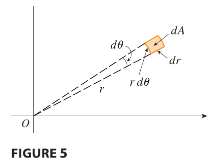

If \(f\) is continuous on a polar rectangle \(R\) given by \(0 \le a \le r \le b, \alpha \le \theta \le \beta\), where \(0 \le \beta - \alpha \le 2\pi\), then \[ \iint_R f(x, y) dA = \int_\alpha^\beta \int_a^b f(r \cos \theta, r \sin \theta) r dr d\theta \tag{2} \]
The formula in (2) says that we convert from rectangular to polar coordinates in a double integral by writing \(x = r \cos \theta\) and \(y = r \sin \theta\), using the appropriate limits of integration for \(r\) and \(\theta\), and replacing \(dA\) by \(r dr d\theta\). Be careful not to forget the additional factor \(r\) on the right side of Formula 2. A classical method for remembering this is shown in Figure 5, where the “infinitesimal” polar rectangle can be thought of as an ordinary rectangle with dimensions \(r d\theta\) and \(dr\) and therefore has “area” \(dA = r dr d\theta\).
